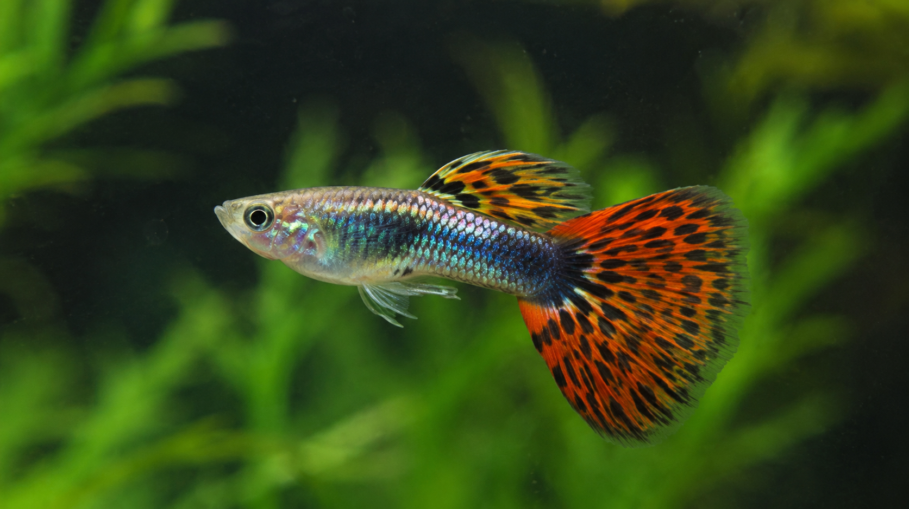

Ikan Guppy (Poecilia reticulata)
Ikan Guppy adalah salah satu jenis ikan hias air tawar tropis yang paling populer di dunia. Ikan ini disukai karena keindahan fisiknya, terutama pada varietas jantan yang memiliki sirip punggung dan ekor yang lebar, melambai-lambai, serta bermotif warna-warni cemerlang mulai dari merah, biru, kuning, hingga pola mosaik.
Sebagai anggota keluarga *Poeciliidae*, ikan Guppy termasuk dalam kelompok ikan *livebearer* yang melahirkan anaknya secara langsung (bukan bertelur). Proses perkembangbiakan mereka sangat cepat dan mudah di dalam ekosistem akuarium yang stabil, sehingga menjadikannya objek studi genetik yang sangat menarik bagi para pehobi.
Dalam pemeliharaan aquascape, ikan Guppy sangat cocok karena memiliki sifat yang damai (peaceful) dan aktif berenang di lapisan atas hingga tengah air. Ikan ini tidak merusak tanaman air karena ukurannya yang kecil dan tidak memiliki kebiasaan menggali substrat. Mereka dapat hidup berdampingan dengan udang hias (*Caridina/Neocaridina*) dan spesies ikan kecil lainnya seperti Neon Tetra atau Corydoras.
Tips Perawatan: Pastikan kualitas air terjaga dengan filter yang baik namun memiliki arus yang tidak terlalu kencang, karena sirip ekor Guppy yang lebar dapat membuat mereka mudah lelah berenang melawan arus kuat. Berikan makanan bervariasi berupa pelet mikro berkualitas tinggi yang dikombinasikan dengan makanan hidup/beku seperti cacing sutra atau daphnia untuk memaksimalkan kecerahan warnanya.